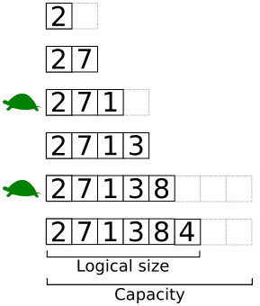
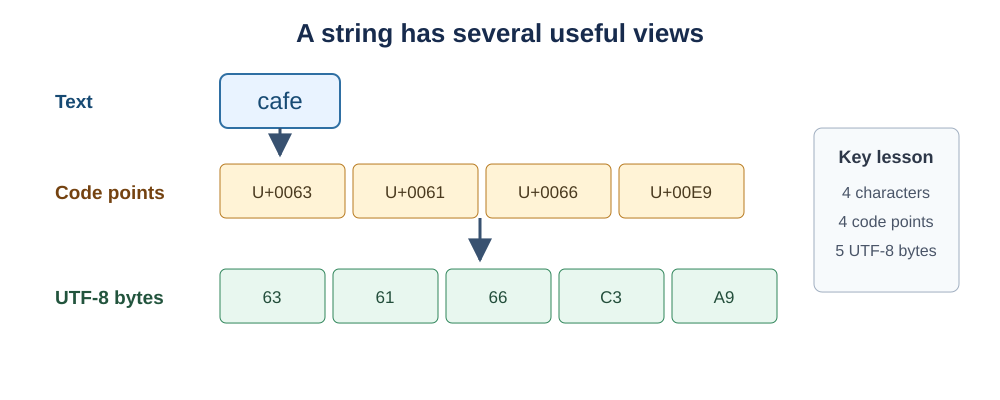
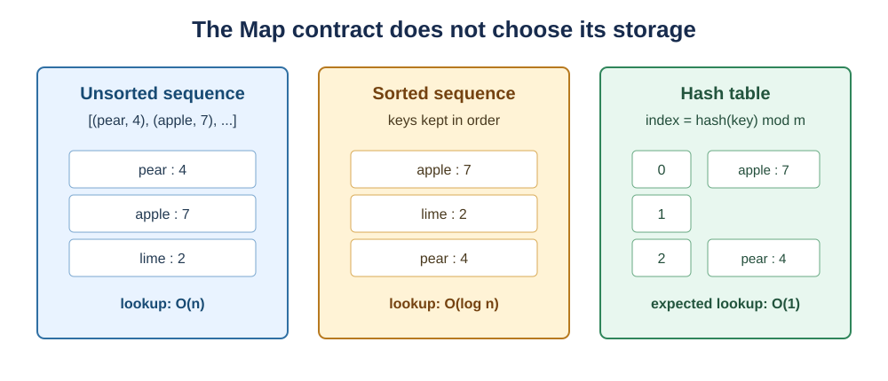
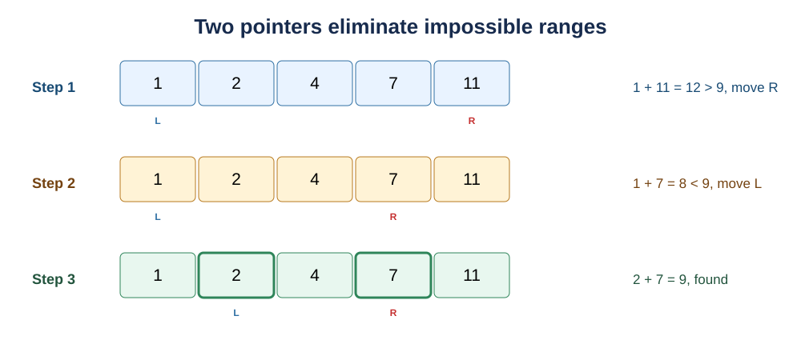
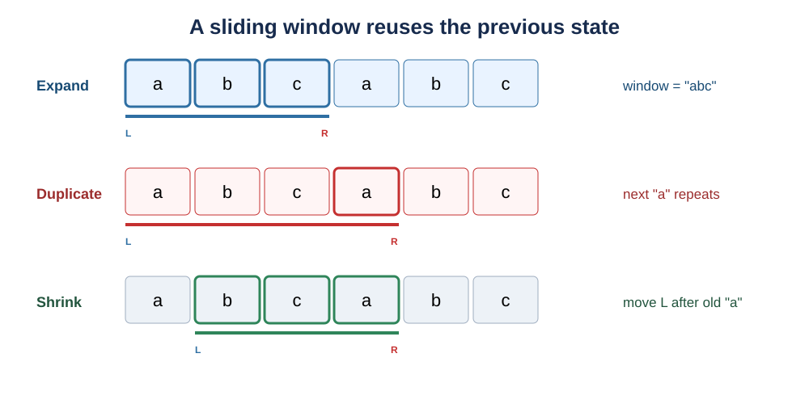

Data Structures and Algorithms: Arrays, Strings, and Hashing
Back to Data Structures and Algorithms guideline
Arrays, Strings, and Hashing
Arrays, strings, and hash tables are foundational because they control how information is laid out and reached. Many problems that initially look unrelated become simple once their required access pattern is recognized: direct indexing suggests an array, sequential text processing suggests a string view, and fast membership or key association suggests hashing.
This chapter studies both the structures and the algorithmic patterns built on top of them. Each section asks four questions:
- what problem does the structure or pattern solve, and why is it preferable to a naive alternative?
- for a data structure, which ADT operations are promised and what are their preconditions and effects?
- how is its internal state organized or updated?
- what are the time and space costs of each operation, and which assumptions make those claims valid?
- how can the idea be implemented clearly in Python?
The recurring theme is state reuse. Prefix sums reuse previous totals, two pointers reuse ordering information, sliding windows reuse the overlap between neighboring ranges, and hashing reuses a computed key-to-bucket mapping.
Arrays and Dynamic Arrays
An array stores a sequence of same-sized slots in contiguous memory. It resembles a numbered row of lockers: if the location of locker 0 and the width of one locker are known, the address of any locker can be calculated immediately. For zero-based index i,
\[ \operatorname{address}(A[i]) = \operatorname{base}(A) + i \cdot w, \]
where \(\operatorname{base}(A)\) is the address of the first slot and w is the fixed byte width of one element. This arithmetic is why indexed access is \(\Theta(1)\); the algorithm does not scan earlier elements.
Arrays solve problems that need ordered storage, fast indexing, or cache-friendly sequential scans. Their main limitation is that inserting near the front requires later elements to shift. If n elements follow the insertion point, the shift costs \(\Theta(n)\).
A dynamic array places a size abstraction over a fixed-capacity array. It tracks:
- a storage block with
capacityslots; - a logical
sizecounting occupied slots; - a growth rule, commonly doubling capacity when full.

Open visual source: Wikimedia Commons - Dynamic array.
{kind=link}
Viewed as a mutable Sequence ADT, an array or dynamic array provides the following operation contract:
| ADT operation | Required behavior |
|---|---|
length() |
Return the number of logical elements. |
get(i) |
Return the element at a valid index i. |
set(i, x) |
Replace the element at index i with x. |
append(x) |
Add x after the current final element. |
insert(i, x) |
Insert x at i while preserving order. |
delete(i) |
Remove the element at i and preserve the order of the remainder. |
find(x) |
Return a matching index or an agreed not-found result. |
For n logical elements, the costs are:
| Operation | Fixed array | Dynamic array | Reason |
|---|---|---|---|
length |
\(O(1)\) | \(O(1)\) | Length is stored. |
get / set |
\(O(1)\) | \(O(1)\) | Address arithmetic reaches one slot. |
find in unsorted data |
\(O(n)\) | \(O(n)\) | Values may need to be scanned. |
append |
\(O(1)\) if a free slot exists | amortized \(O(1)\); worst \(O(n)\) | Resizing copies the occupied block. |
pop_back |
\(O(1)\) | \(O(1)\) | No suffix shifts. |
middle insert / delete |
\(O(n)\) | \(O(n)\) | A suffix shifts to preserve order. |
| iterate all values | \(\Theta(n)\) | \(\Theta(n)\) | Every logical element is visited. |
Both representations use \(\Theta(n)\) logical storage. A dynamic array may reserve additional unused slots; with capacity doubling, capacity remains \(O(n)\) after the array has grown.
The dynamic array is better than a fixed array when the final length is unknown: it preserves \(O(1)\) indexing and provides \(O(1)\) amortized append. A linked list can insert without shifting once a node is known, but it cannot calculate the address of the i-th element directly and has weaker cache locality.
Python implementation: expose insertion and deletion shifts
from typing import TypeVar
T = TypeVar("T")
def insert_at(values: list[T], index: int, item: T) -> None:
"""Insert item while making the array shift explicit."""
if index < 0 or index > len(values):
raise IndexError("insertion index out of range")
# Python grows the list storage if necessary.
values.append(item)
# Move the suffix one place to the right, starting from the end so
# no unshifted value is overwritten.
for position in range(len(values) - 1, index, -1):
values[position] = values[position - 1]
values[index] = item
def delete_at(values: list[T], index: int) -> T:
"""Delete one item and close the resulting gap."""
if index < 0 or index >= len(values):
raise IndexError("deletion index out of range")
removed = values[index]
for position in range(index, len(values) - 1):
values[position] = values[position + 1]
values.pop()
return removed
numbers = [10, 20, 40]
insert_at(numbers, 2, 30)
assert numbers == [10, 20, 30, 40]
assert delete_at(numbers, 1) == 20
assert numbers == [10, 30, 40]Python’s built-in list.insert and list.pop should be used in production. The explicit loops above reveal the structural cost hidden by those convenient operations.
Practice. LeetCode 238 - Product of Array Except Self trains careful array indexing and the reuse of left and right accumulated information.
Strings as Sequences
A string is an ordered sequence of text symbols, but “one symbol” can mean different things at different layers. A user sees characters, Unicode assigns code points, and an encoding such as UTF-8 stores those code points as bytes. The distinction matters because one visible character does not always occupy one byte, and some visible graphemes consist of multiple code points.

Strings solve problems involving text search, parsing, comparison, normalization, and transformation. Treating them as sequences makes familiar array patterns available, but two properties require attention:
- Python strings are immutable. An operation that appears to modify a string creates a new value.
- Indexing a Python string addresses Unicode code points, while indexing encoded
bytesaddresses individual bytes.
As an immutable Sequence ADT, a string supports observation and construction operations but not in-place set(i, x):
| ADT operation | Required behavior | Cost for a string of length n |
|---|---|---|
length() |
Return the number of indexed code points. | \(O(1)\) in Python |
char_at(i) |
Return the code point at valid index i. |
\(O(1)\) in Python |
iterate() |
Visit all indexed code points in order. | \(\Theta(n)\) |
slice(left, right) |
Return a new string containing k selected code points. |
\(\Theta(k)\) time and space |
concat(a, b) |
Return a new string containing both operands. | \(\Theta(|a|+|b|)\) |
equals(other) |
Test whether lengths and corresponding code points match. | worst-case \(\Theta(n)\) |
contains(character) |
Test whether one character occurs. | worst-case \(O(n)\) |
The total representation uses \(\Theta(n)\) code-unit storage. Because the ADT is immutable, slicing and concatenation allocate new strings; this space cost explains why repeated result = result + fragment can become quadratic over a loop.
Immutability makes strings safe to share and hash, but repeated concatenation in a loop can copy an ever-growing prefix. Appending fragments to a list and joining once is usually better because the total content is assembled in one final pass.
Python implementation: inspect text representation and build efficiently
def inspect_text(text: str) -> list[dict[str, object]]:
"""Show each Python character, Unicode code point, and UTF-8 bytes."""
result: list[dict[str, object]] = []
for character in text:
result.append(
{
"character": character,
"code_point": f"U+{ord(character):04X}",
"utf8_bytes": list(character.encode("utf-8")),
}
)
return result
def join_words(words: list[str]) -> str:
"""Build one string without repeatedly copying a growing prefix."""
fragments: list[str] = []
for word in words:
if fragments:
fragments.append(" ")
fragments.append(word)
return "".join(fragments)
details = inspect_text("caf\N{LATIN SMALL LETTER E WITH ACUTE}")
assert len(details) == 4
assert details[-1]["utf8_bytes"] == [195, 169]
assert join_words(["data", "structures", "matter"]) == "data structures matter"For ASCII-only interview problems, character and byte reasoning often coincide. For real multilingual systems, normalization, case folding, grapheme boundaries, and locale rules must be considered explicitly.
Practice. LeetCode 5 - Longest Palindromic Substring develops the habit of treating a string as an indexed sequence with meaningful boundaries.
Hash Tables, Maps, and Sets
A hash table converts a key into a bucket index so that lookup can jump near the desired record instead of scanning all records. It is like a library that computes a shelf from a book identifier: a good rule spreads books across shelves, but two books may still be assigned to the same shelf.
For a table with m buckets, a common index calculation is
\[ \operatorname{index}(k)=\operatorname{hash}(k) \bmod m. \]
The hash function converts key k into an integer, and modulo m maps that integer into a valid bucket index from 0 through m-1. Equal keys must produce equal hashes during their lifetime.
A collision occurs when distinct keys select the same bucket. Separate chaining stores a small collection of key-value pairs in each bucket; open addressing searches other table positions according to a probing rule.

Open visual source: Wikimedia Commons - Hash table.
{kind=link}
The load factor is
\[ \alpha = \frac{n}{m}, \]
where n is the number of stored entries and m is the number of buckets. As \(\alpha\) grows, collision chains become longer. Practical hash tables resize to keep the load factor controlled, which supports expected \(O(1)\) lookup, insertion, and deletion. Worst-case lookup is still \(O(n)\) if many keys collide.
A map associates each unique key with a value; a set stores only unique keys. Both can use the same hash-table machinery. They are better than repeated array scans when a program frequently asks “have I seen this key?” or “what value belongs to this key?” and does not require sorted order.
Hash tables commonly implement two related ADTs:
| ADT | Operation | Required effect or result |
|---|---|---|
| Map | set(key, value) |
Insert a new association or replace the value for an equal key. |
| Map | get(key) |
Return the associated value; fail or return a defined sentinel if absent. |
| Map | delete(key) |
Remove the association for key. |
| Map | contains(key) |
Report whether an association exists. |
| Set | add(value) |
Store one copy of value. |
| Set | remove(value) |
Remove value if the contract permits the call. |
| Set | contains(value) |
Report membership. |
With n entries and a controlled load factor, separate chaining has these costs:
| Operation | Expected time | Worst-case time | Explanation |
|---|---|---|---|
get / contains |
\(O(1)\) | \(O(n)\) | Search one short chain; all keys may collide. |
set / add |
amortized expected \(O(1)\) | \(O(n)\) | May search a chain or resize the table. |
delete / remove |
expected \(O(1)\) | \(O(n)\) | Locate and unlink one chain entry. |
| iterate entries | \(O(n+m)\) | \(O(n+m)\) | Inspect m buckets and emit n entries. |
| storage | \(O(n+m)\) | \(O(n+m)\) | Buckets plus stored records. |
The word expected depends on a well-distributed hash function and a resizing policy that keeps \(\alpha=n/m\) bounded. The fixed-size teaching implementation below demonstrates collisions but does not resize, so its chains would eventually grow if used for an unbounded number of entries.
Python implementation: a small chained hash map
from collections.abc import Hashable
from typing import Generic, TypeVar
K = TypeVar("K", bound=Hashable)
V = TypeVar("V")
class ChainedHashMap(Generic[K, V]):
"""A teaching implementation using separate chaining."""
def __init__(self, bucket_count: int = 8) -> None:
if bucket_count <= 0:
raise ValueError("bucket_count must be positive")
self._buckets: list[list[tuple[K, V]]] = [
[] for _ in range(bucket_count)
]
self._size = 0
def _bucket(self, key: K) -> list[tuple[K, V]]:
index = hash(key) % len(self._buckets)
return self._buckets[index]
def set(self, key: K, value: V) -> None:
bucket = self._bucket(key)
# Search only the selected collision chain.
for position, (stored_key, _) in enumerate(bucket):
if stored_key == key:
bucket[position] = (key, value)
return
bucket.append((key, value))
self._size += 1
def get(self, key: K) -> V:
for stored_key, stored_value in self._bucket(key):
if stored_key == key:
return stored_value
raise KeyError(key)
def contains(self, key: K) -> bool:
return any(stored_key == key for stored_key, _ in self._bucket(key))
def delete(self, key: K) -> V:
bucket = self._bucket(key)
for position, (stored_key, stored_value) in enumerate(bucket):
if stored_key == key:
bucket.pop(position)
self._size -= 1
return stored_value
raise KeyError(key)
def __len__(self) -> int:
return self._size
scores = ChainedHashMap[str, int]()
scores.set("Ada", 91)
scores.set("Grace", 95)
scores.set("Ada", 93)
assert scores.get("Ada") == 93
assert scores.contains("Grace")
assert len(scores) == 2
assert scores.delete("Grace") == 95
assert not scores.contains("Grace")
assert len(scores) == 1Python’s production dict and set are highly optimized and should replace this teaching implementation in real code.
Practice. LeetCode 49 - Group Anagrams trains the design of a canonical hash key and the use of a map to collect related values.
Map ADT: Sorted, Unsorted, and Hash-Based Implementations
The Map ADT stores unique keys and associates each key with at most one value. It does not require hashing. Its operation contract is:
| ADT operation | Precondition | Required effect or result |
|---|---|---|
set(key, value) |
Key is valid | Insert the association or replace the old value for an equal key. |
get(key) |
Usually key exists | Return the associated value, or follow the documented missing-key policy. |
delete(key) |
Usually key exists | Remove the key and its value. |
contains(key) |
None | Return whether the key is present. |
items() |
None | Iterate over every key-value association exactly once. |
range(low, high) |
Keys are ordered | Return associations whose keys fall inside the requested interval. |
Choosing a representation depends on which of these operations the application performs most often.

An unsorted sequence map stores key-value records in any order. Appending a key known to be absent can be \(O(1)\), but a general set must first search for an equal key and is therefore \(O(n)\). A sorted array map keeps keys ordered, enabling \(O(\log n)\) binary-search lookup; insertion and deletion remain \(O(n)\) because later records shift. A hash map offers expected \(O(1)\) exact-key operations but does not naturally provide sorted traversal or range queries. A balanced search tree, introduced later, gives \(O(\log n)\) updates and ordered operations.
| Implementation | get / contains |
set |
delete |
Ordered range |
|---|---|---|---|---|
| Unsorted sequence | \(O(n)\) | \(O(n)\) | \(O(n)\) | \(O(n)\) scan |
| Sorted array | \(O(\log n)\) | \(O(n)\) | \(O(n)\) | \(O(\log n + k)\) |
| Hash table | expected \(O(1)\) | expected \(O(1)\) | expected \(O(1)\) | \(O(n)\) scan |
| Balanced tree | \(O(\log n)\) | \(O(\log n)\) | \(O(\log n)\) | \(O(\log n + k)\) |
In the range-query cost, k is the number of returned records. This output term cannot be avoided because producing k answers already requires \(\Omega(k)\) work.
Python implementation: a sorted-array map
from bisect import bisect_left, bisect_right
class SortedArrayMap:
"""Map integer keys to values while preserving key order."""
def __init__(self) -> None:
self._keys: list[int] = []
self._values: list[str] = []
def set(self, key: int, value: str) -> None:
# Binary search finds the key or its insertion position in O(log n).
index = bisect_left(self._keys, key)
if index < len(self._keys) and self._keys[index] == key:
self._values[index] = value
return
# List insertion shifts the suffix, so this step is O(n).
self._keys.insert(index, key)
self._values.insert(index, value)
def get(self, key: int) -> str:
index = bisect_left(self._keys, key)
if index == len(self._keys) or self._keys[index] != key:
raise KeyError(key)
return self._values[index]
def contains(self, key: int) -> bool:
index = bisect_left(self._keys, key)
return index < len(self._keys) and self._keys[index] == key
def delete(self, key: int) -> str:
index = bisect_left(self._keys, key)
if index == len(self._keys) or self._keys[index] != key:
raise KeyError(key)
self._keys.pop(index)
return self._values.pop(index)
def items(self) -> list[tuple[int, str]]:
return list(zip(self._keys, self._values))
def range_items(self, low: int, high: int) -> list[tuple[int, str]]:
"""Return items with low <= key <= high."""
start = bisect_left(self._keys, low)
stop = bisect_right(self._keys, high)
return list(zip(self._keys[start:stop], self._values[start:stop]))
map_by_id = SortedArrayMap()
map_by_id.set(30, "thirty")
map_by_id.set(10, "ten")
map_by_id.set(20, "twenty")
assert map_by_id.get(20) == "twenty"
assert map_by_id.contains(30)
assert map_by_id.range_items(15, 30) == [(20, "twenty"), (30, "thirty")]
assert map_by_id.delete(20) == "twenty"
assert map_by_id.items() == [(10, "ten"), (30, "thirty")]Hashing is better for frequent exact-key access; sorted storage is better when order, predecessor/successor, or range access matters. The interface alone does not determine the right implementation.
Practice. LeetCode 128 - Longest Consecutive Sequence demonstrates how a hash set changes an apparent sorting problem from \(O(n\log n)\) to expected \(O(n)\).
Prefix Sums
A prefix sum is cumulative bookkeeping. Imagine an electricity meter that records total consumption since installation: consumption during one month is obtained by subtracting the earlier reading from the later reading, rather than adding every minute again.
For an array \(A\) of length n, define a prefix array \(P\) of length n + 1:
\[ P[0]=0, \qquad P[i+1]=P[i]+A[i]. \]
P[i] is the sum of the first i elements, excluding A[i]. This half-open convention makes the sum from index left up to but excluding right equal to
\[ \sum_{j=left}^{right-1} A[j] = P[right]-P[left]. \]
Everything before left appears in both prefix totals and cancels.
Pseudocode.
BUILD-PREFIX(A)
P <- array of length n + 1 filled with 0
for i from 0 to n - 1
P[i + 1] <- P[i] + A[i]
return P
RANGE-SUM(P, left, right)
return P[right] - P[left]
Building costs \(O(n)\) time and \(O(n)\) extra space; each later range query costs \(O(1)\). Prefix sums are therefore better than rescanning when the array is mostly static and many range queries are expected. They are less convenient when values are updated frequently, because one change affects every later prefix.
Python implementation: immutable range-sum queries
class PrefixSum:
"""Preprocess a numeric sequence for O(1) half-open range sums."""
def __init__(self, values: list[int]) -> None:
self._prefix = [0]
# Each new entry includes exactly one more input value.
for value in values:
self._prefix.append(self._prefix[-1] + value)
def range_sum(self, left: int, right: int) -> int:
"""Return sum(values[left:right])."""
if left < 0 or right < left or right >= len(self._prefix):
raise IndexError("invalid half-open range")
return self._prefix[right] - self._prefix[left]
totals = PrefixSum([3, -1, 4, 2, 5])
assert totals.range_sum(1, 4) == 5 # -1 + 4 + 2
assert totals.range_sum(0, 5) == 13
assert totals.range_sum(3, 3) == 0 # empty rangeThe same subtraction idea extends to two-dimensional prefix sums, frequency prefixes, parity prefixes, and prefix XOR.
Practice. LeetCode 560 - Subarray Sum Equals K combines prefix sums with a hash map of earlier prefix frequencies.
Two Pointers
The two-pointer technique maintains two meaningful positions in the same sequence. Instead of trying every pair, each comparison uses a structural property to rule out many candidates. It is like searching a sorted shelf from both ends: if the two selected values are too large, moving the larger end inward is the only move that can reduce their sum.
For a sorted array and a target sum:
PAIR-SUM-SORTED(values, target)
left <- 0
right <- length(values) - 1
while left < right
total <- values[left] + values[right]
if total equals target
return (left, right)
if total < target
left <- left + 1
else
right <- right - 1
return not-found
Why are these moves safe? If the current sum is too small, pairing the current left value with any index left of right would produce an equal or smaller sum, so the current left value cannot participate in a solution. The symmetric argument justifies moving right when the sum is too large. Each pointer moves only inward, so there are at most n - 1 moves and the algorithm runs in \(O(n)\) time with \(O(1)\) auxiliary space.
Two pointers are especially useful for sorted pair problems, palindrome checks, partitioning, merging, and “slow/fast” traversal. They are better than nested pair enumeration only when pointer movement can safely eliminate candidates.
Python implementation: pair sum in a sorted sequence
def pair_sum_sorted(values: list[int], target: int) -> tuple[int, int] | None:
"""Return indices of one target-sum pair in a sorted list."""
left = 0
right = len(values) - 1
while left < right:
total = values[left] + values[right]
if total == target:
return left, right
if total < target:
# Every pair using this left value is now too small.
left += 1
else:
# Every pair using this right value is now too large.
right -= 1
return None
assert pair_sum_sorted([1, 2, 4, 7, 11], 9) == (1, 3)
assert pair_sum_sorted([1, 2, 4, 7, 11], 20) is NonePractice. LeetCode 11 - Container With Most Water requires a different elimination proof: move the shorter boundary because width always decreases and the shorter height limits the current area.
Sliding Windows
A sliding window represents a contiguous interval with left and right boundaries. Neighboring intervals overlap heavily, so the algorithm updates only what entered or left instead of recomputing the entire range. A useful analogy is a moving camera frame: most of the scene remains, one strip disappears, and one new strip appears.
There are two common forms:
- a fixed-size window moves while preserving a constant length;
- a variable-size window expands to gather candidates and shrinks until a constraint becomes valid again.
For the longest substring without repeated characters, maintain the invariant that the current window contains no duplicate character.
LONGEST-DISTINCT-WINDOW(text)
left <- 0
last_seen <- empty map
best <- 0
for right from 0 to length(text) - 1
character <- text[right]
if character was seen at or after left
left <- last_seen[character] + 1
last_seen[character] <- right
best <- max(best, right - left + 1)
return best
The map is not cleared when left moves. Old positions remain harmless because the condition checks whether the previous index is still inside the current window. Both boundaries move only forward, so the total work is \(O(n)\) even though shrinking conceptually occurs inside expansion.
Sliding windows are better than enumerating all substrings when the target property can be updated incrementally as boundaries move. They are not suitable when removing the leftmost item cannot be reflected efficiently or when the property lacks the monotonic behavior needed to decide which boundary to move.
Python implementation: a variable window with unique characters
def longest_distinct_window(text: str) -> tuple[int, str]:
"""Return the length and one longest substring without repetition."""
last_seen: dict[str, int] = {}
left = 0
best_left = 0
best_length = 0
for right, character in enumerate(text):
previous = last_seen.get(character)
if previous is not None and previous >= left:
# Remove the earlier copy and everything before it in one jump.
left = previous + 1
last_seen[character] = right
current_length = right - left + 1
if current_length > best_length:
best_length = current_length
best_left = left
return best_length, text[best_left : best_left + best_length]
length, window = longest_distinct_window("abcabcbb")
assert length == 3
assert len(set(window)) == len(window)Practice. LeetCode 3 - Longest Substring Without Repeating Characters directly exercises the variable-window invariant and boundary update.
Subarray and Substring Patterns
A subarray or substring is contiguous; a subsequence preserves order but may skip elements; a subset ignores positions and order. This vocabulary determines which algorithms are valid. Sliding windows and prefix differences naturally describe contiguous ranges, while subsequences often require dynamic programming.
For the maximum-sum subarray, testing every pair of boundaries and summing each range repeats enormous amounts of work. Kadane’s algorithm asks a smaller question at each position: what is the best subarray sum that must end here?
Let current be the best sum ending at the current value x. There are only two possibilities: extend the previous ending subarray, or start a new subarray at x.
\[ \operatorname{current}_i = \max(A[i],\; \operatorname{current}_{i-1}+A[i]). \]
The first term starts over; the second extends. A separate best stores the greatest current seen anywhere.
Pseudocode.
MAXIMUM-SUBARRAY-SUM(values)
current <- values[0]
best <- values[0]
for each value x after the first
current <- max(x, current + x)
best <- max(best, current)
return best
The algorithm is \(O(n)\) time and \(O(1)\) auxiliary space. It is better than the \(O(n^2)\) boundary-pair approach because all information needed from the previous position is summarized in one number. It also handles all-negative arrays correctly by initializing from the first element rather than using zero as an automatically allowed empty subarray.
Python implementation: Kadane with recovered boundaries
def maximum_subarray(values: list[int]) -> tuple[int, int, int]:
"""Return (best_sum, start, end_exclusive) for a non-empty list."""
if not values:
raise ValueError("maximum_subarray requires a non-empty list")
current_sum = best_sum = values[0]
current_start = best_start = 0
best_end = 1
for index in range(1, len(values)):
value = values[index]
if value > current_sum + value:
# The previous prefix hurts, so begin a new candidate here.
current_sum = value
current_start = index
else:
current_sum += value
if current_sum > best_sum:
best_sum = current_sum
best_start = current_start
best_end = index + 1
return best_sum, best_start, best_end
values = [-2, 1, -3, 4, -1, 2, 1, -5, 4]
best_sum, left, right = maximum_subarray(values)
assert best_sum == 6
assert values[left:right] == [4, -1, 2, 1]Practice. LeetCode 53 - Maximum Subarray is the canonical exercise for this local-state recurrence.
Matrix Traversal and Simulation
A matrix is commonly represented as a list of rows. The element at row r and column c is accessed as matrix[r][c]. Matrix algorithms become difficult less because of the values than because boundaries, directions, and visited regions must remain consistent.
Simulation makes those state variables explicit. In spiral traversal, four boundaries describe the unvisited rectangle:
top: first unvisited row;bottom: last unvisited row;left: first unvisited column;right: last unvisited column.
Each round consumes the top row, right column, bottom row, and left column, then moves the corresponding boundary inward.
SPIRAL(matrix)
top <- 0, bottom <- row_count - 1
left <- 0, right <- column_count - 1
while top <= bottom and left <= right
visit top row from left to right; top <- top + 1
visit right column from top to bottom; right <- right - 1
if top <= bottom
visit bottom row from right to left; bottom <- bottom - 1
if left <= right
visit left column from bottom to top; left <- left + 1
The two guard conditions before traversing the bottom and left sides prevent a single remaining row or column from being visited twice. Every matrix element is emitted exactly once, so time is \(O(rows \cdot columns)\). The output itself contains that many elements; excluding output storage, the algorithm uses \(O(1)\) auxiliary state.
Python implementation: boundary-controlled spiral traversal
def spiral_order(matrix: list[list[int]]) -> list[int]:
"""Return matrix elements in clockwise spiral order."""
if not matrix or not matrix[0]:
return []
top = 0
bottom = len(matrix) - 1
left = 0
right = len(matrix[0]) - 1
result: list[int] = []
while top <= bottom and left <= right:
# Consume the top side from left to right.
for column in range(left, right + 1):
result.append(matrix[top][column])
top += 1
# Consume the right side from top to bottom.
for row in range(top, bottom + 1):
result.append(matrix[row][right])
right -= 1
# These checks handle a remaining single row or column safely.
if top <= bottom:
for column in range(right, left - 1, -1):
result.append(matrix[bottom][column])
bottom -= 1
if left <= right:
for row in range(bottom, top - 1, -1):
result.append(matrix[row][left])
left += 1
return result
grid = [[1, 2, 3], [4, 5, 6], [7, 8, 9]]
assert spiral_order(grid) == [1, 2, 3, 6, 9, 8, 7, 4, 5]Practice. LeetCode 54 - Spiral Matrix focuses on boundary invariants and avoiding duplicate visits.
Comparison and Selection
The techniques in this chapter are related but not interchangeable. Choose them from the information the problem gives and the operations it repeats.
| Need or clue | First candidate | State being reused | Typical cost |
|---|---|---|---|
| Direct access by position | Array | base address and index | \(O(1)\) access |
| Ordered text processing | String sequence | neighboring symbols and indices | usually \(O(n)\) scan |
| Exact membership or association | Hash set / map | key-to-bucket mapping | expected \(O(1)\) operation |
| Many static range totals | Prefix sum | cumulative total | \(O(n)\) build, \(O(1)\) query |
| Ordered candidates can be eliminated | Two pointers | left/right feasible region | often \(O(n)\) |
| Property belongs to a contiguous range | Sliding window | previous window state | often \(O(n)\) |
| Best contiguous accumulated score | Kadane’s algorithm | best sum ending here | \(O(n)\) |
| Directional grid visit | Boundary simulation | shrinking unvisited region | \(O(rc)\) |
A practical decision sequence is:
- identify whether order, contiguity, membership, or repeated range queries are central;
- write the simplest correct baseline and locate its repeated work;
- ask whether a map, prefix state, pointer boundary, or rolling state can summarize that work;
- state the invariant that makes each update safe;
- check edge cases such as empty input, duplicates, all-negative values, one-row matrices, and Unicode text;
- confirm both time and auxiliary-space costs under explicit assumptions.
These patterns become most powerful in combination. A sliding window often carries a frequency hash map; a subarray-counting method combines prefix sums with hashing; two pointers often rely on sorting. The design skill is recognizing which pieces of state allow earlier work to be reused without losing correctness.
Practice. LeetCode 438 - Find All Anagrams in a String combines string sequencing, frequency hashing, and a fixed-size sliding window.